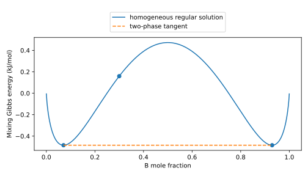

IIT Hyderabad · NPTEL · Independent study edition
Free energy, interdiffusion, and phase formation
Two polished alloys are pressed together and annealed. Does the junction become a smooth composition gradient, develop a new layer, or separate into two compositions? A diffusivity supplies a rate only after thermodynamics has identified the direction in which redistribution can lower free energy.
Lectures 21–23 supply the free-energy, chemical-potential, diffusion-couple, and phase-development spine. The regular-solution calculation is a synthetic teaching model, not an assessed Cu–Ni phase diagram. Its parameters and all printed numerical results are computed in the companion laboratory.
10.1 From a specimen to a molar free-energy curve L21 01:21
Consider a closed binary specimen containing chemical components A and B at fixed temperature \(T\), in kelvin, and pressure \(p\), in pascals. A component is an independently specified chemical constituent; a phase is a macroscopically homogeneous state with a particular structure and thermodynamic constitutive function. A single crystal structure can support many compositions. Two regions with the same structure can also be distinct phases when they have different equilibrium compositions.
Let \(n_A,n_B\) be amounts in moles, \(n=n_A+n_B\), and \(z=N_B=n_B/n\) the B mole fraction. Then \(N_A=1-z\). For a homogeneous phase with negligible surface contributions, extensivity permits \(G=n g(z,T,p)\), where \(G\) is Gibbs energy in joules and \(g\) is molar Gibbs energy in J/mol. The plot of \(g\) against \(z\) is always associated with a specified phase, temperature, and pressure.
A reference state separates mixing from the energies of pure components in that phase. Write \(g=(1-z)g_A^0+zg_B^0+g_{\rm mix}\). The superscript zero denotes the chosen pure reference, not zero numerical energy. Changing either reference adds a straight line to the entire curve. Such a line changes the individual chemical-potential values but leaves curvature and the equilibrium compositions of a self-consistently transformed model unchanged. Comparing phases requires common references; independently shifting one phase is a physical change to their relative stability.
For an ideal substitutional solution, all arrangements of atoms on equivalent sites have the same energy at a specified composition. The number of arrangements produces the molar mixing entropy \(s_{\rm mix}=-R[(1-z)\ln(1-z)+z\ln z]\), where \(R\) is the molar gas constant. The logarithm acts on dimensionless fractions, and the limiting convention is \(z\ln z\to0\) at zero. With zero mixing enthalpy, the definition \(g=h-Ts\) gives
\[ g_{\rm mix}^{\rm ideal}=RT[(1-z)\ln(1-z)+z\ln z]. \tag{10.1} \]The plus sign before the bracket is essential: its contents are nonpositive. At equal proportions the laboratory gives \(g_{\rm mix}=-5763.15\) J/mol at the synthetic temperature 1000 K. Disorder lowers Gibbs energy in this ideal model. The temperature derivative at fixed pressure and composition is \(\partial_T g=-s\); free energy is not generally inversely proportional to temperature.
A regular solution retains this random configurational entropy but adds an interaction enthalpy \(\Omega z(1-z)\), with \(\Omega\) in J/mol. Positive \(\Omega\) penalizes unlike neighbors in this mean-field representation. The model is useful because one adjustable competition generates either complete miscibility or a tendency to separate. It does not establish the actual phase diagram of a named alloy; ordering, magnetic contributions, vibrational entropy, and composition-dependent interactions can all change that diagram.
10.2 The quantity transported down a thermodynamic force L21 10:33
Moving one component between two neighboring regions changes their amounts, so the relevant derivative is with respect to amount, not composition alone. Define the chemical potential of A as \(\mu_A=(\partial G/\partial n_A)_{T,p,n_B}\), in J/mol; define \(\mu_B\) by holding \(n_A\) fixed. The subscripts matter because changing \(n_A\) changes both the total amount and the mole fraction. Chemical potential is a partial molar Gibbs energy, rather than the energy of an isolated atom.
At fixed B amount, \(\partial n/\partial n_A=1\) and \(\partial z/\partial n_A=-z/n\). The product and chain rules applied to \(ng(z)\) therefore give \(\mu_A=g-zg'\), where a prime denotes differentiation with respect to \(z\). For a B addition, \(\partial z/\partial n_B=(1-z)/n\). Thus
\[ \mu_A=g-zg',\qquad \mu_B=g+(1-z)g',\qquad \mu_B-\mu_A=g',\qquad g=(1-z)\mu_A+z\mu_B. \tag{10.2} \]A tangent drawn at composition \(z\) has equation \(y(u)=g(z)+(u-z)g'(z)\). Its intercept at \(u=0\) is \(\mu_A\); its value at \(u=1\) is \(\mu_B\). The tangent-intercept construction is therefore a graphical expression of the amount derivative, not a separate definition. The slope gives the difference between two chemical potentials, so equal slope does not imply equal individual potentials unless the tangent intercepts also agree.
Substitution of (10.1) gives \(\mu_A=g_A^0+RT\ln(1-z)\) and \(\mu_B=g_B^0+RT\ln z\). The regular-solution model adds \(\Omega z^2\) to the A potential and \(\Omega(1-z)^2\) to the B potential. For the synthetic example used here and below, take \(T=1000\) K, \(\Omega=3RT\), and zero pure-reference energies. At \(z=0.3\), the computed values are \(\mu_A=-720.656\) and \(\mu_B=2211.873\) J/mol. Their weighted average is \(g=159.103\) J/mol, checking extensivity explicitly.
Activity packages nonideality into a dimensionless quantity: \(\mu_i=\mu_i^0+RT\ln a_i\). With the pure-component reference, \(a_i=\gamma_iN_i\) defines the activity coefficient \(\gamma_i\). An ideal solution has \(\gamma_i=1\). A pure stable phase has activity one relative to itself at the same conditions, even though its chemical potential is not zero. “Pure silver has unit activity” is consequently a reference-state statement; it does not assign unit activity to dilute silver in every host.
10.3 Common tangents and the amount of each phase L21 15:40
Suppose the specimen can split into phases \(\alpha\) and \(\beta\), with compositions \(z_\alpha,z_\beta\). Transferring a small A amount from alpha to beta changes total Gibbs energy by \((\mu_A^\beta-\mu_A^\alpha)dn_A\). If either transfer direction is allowed at equilibrium, the first-order change must vanish. Repeating for B gives two equalities: \(\mu_A^\alpha=\mu_A^\beta\) and \(\mu_B^\alpha=\mu_B^\beta\). Equilibrium does not require the A potential to equal the B potential.
By (10.2), those two equalities require a line tangent to both phase curves. If the phases share a single regular-solution curve, the line touches that curve at two distinct compositions. For a total B fraction \(\bar z\) between them, let \(f_\beta\) be the fraction of total moles in beta. Conservation gives \(\bar z=(1-f_\beta)z_\alpha+f_\beta z_\beta\), hence the lever rule
\[ f_\beta=\frac{\bar z-z_\alpha}{z_\beta-z_\alpha},\qquad g_{\rm pair}=(1-f_\beta)g(z_\alpha)+f_\beta g(z_\beta). \tag{10.3} \]This fraction is a molar fraction of phases. A volume fraction additionally needs their molar volumes. Between the two contact compositions, the equilibrium energy follows the straight segment, while the homogeneous energy follows the curved branch. The stable equilibrium is the lower convex envelope of all candidate phase curves: the lowest energy achievable by conserving composition while combining phases. The sign of mixing energy relative to an unmixed reference does not alone answer the stability question.
The synthetic calculation sets \(\Omega=3RT\). Symmetry makes the common tangent horizontal, so its contact compositions solve \(g'(z)=RT\ln[z/(1-z)]+\Omega(1-2z)=0\). The noncentral roots are 0.0707202 and 0.9292798. At \(\bar z=0.3\), the B-rich phase fraction is 0.267052. The two-phase energy is −485.077 J/mol, lower than the homogeneous 159.103 J/mol. Figure 10.1 visualizes the energy reduction; its values describe the declared model only.

The Gibbs phase rule counts independent intensive variables at equilibrium. With \(C\) independent components and \(P\) phases, each phase contributes \(C-1\) independent compositions; temperature and pressure add two. Equality of each component potential between a reference phase and each other phase imposes \(C(P-1)\) constraints. The remaining count is \(F=P(C-1)+2-C(P-1)=C-P+2\), assuming independent constraints and no additional fields or reactions. Fixing pressure subtracts one; fixing temperature as well subtracts another.
A binary two-phase equilibrium at fixed temperature and pressure has zero intensive composition freedom. Its two compositions are fixed, but the phase amounts can vary through (10.3). Phase fraction is an extensive partition of total material, not an additional intensive degree of freedom. This distinction will matter when a diffusion path crosses a two-phase region.
10.4 Downhill free energy can mean uphill composition L22 00:20
A concentration gradient is useful only when it represents the thermodynamic force of interest. To expose that restriction, take a binary lattice with constant molar site concentration \(c_s=1/V_m\), where \(V_m\) is a constant molar volume. Exchange of B for A leaves the number of occupied sites unchanged. The exchange potential is \(\Delta\mu=\mu_B-\mu_A=g'(z)\). For one spatial coordinate \(x\), in meters, adopt the simple isothermal kinetic closure \(J_B=-\mathcal K(z)\partial_x\Delta\mu\) with \(J_A=-J_B\). Here \(J_B\) is the exchange molar flux in mol/(m²·s), and the nonnegative exchange coefficient \(\mathcal K\) has units mol²/(J·m·s).
The closure is a constitutive assumption, rather than a consequence of conservation. Species balance gives \(c_s\partial_t z=-\partial_xJ_B\). On a fixed interval with zero flux at both ends, the total free energy per area is \(\mathcal G=\int c_s g(z)dx\). Differentiate, substitute balance, and integrate by parts. The boundary term is zero, yielding
\[ \frac{d\mathcal G}{dt}=\int (\partial_x\Delta\mu)J_B\,dx =-\int\mathcal K(\partial_x\Delta\mu)^2dx\leq0. \tag{10.4} \]The sign is controlled by the kinetic coefficient. Within a homogeneous branch, \(\partial_x\Delta\mu=g''\partial_xz\), so comparison with a Fick form gives \(\widetilde D=\mathcal K g''/c_s\). Positive curvature produces ordinary down-gradient diffusion. Negative curvature gives a flux up the composition gradient while still reducing total Gibbs energy. Uphill diffusion therefore need not violate the second law.
The regular solution has \(g''=RT/[z(1-z)]-2\Omega\). At \(\Omega=3RT\), curvature is negative between 0.211325 and 0.788675. This spinodal interval is the local instability region: infinitesimal long-wavelength composition fluctuations lower the homogeneous free energy. It is narrower than the coexistence interval. Between a common-tangent contact and the adjacent spinodal boundary, separation may lower global energy even though small fluctuations cost energy; creating a new phase then entails an interfacial barrier that this bulk curve omits.
A negative coefficient in the local second-order diffusion equation amplifies ever shorter wavelengths without bound, so it is not by itself a well-posed continuum phase-separation model. A finite interfacial penalty supplies a length scale. For example, adding \(\tfrac12\kappa(\partial_xz)^2\) to the free-energy density, with \(\kappa>0\) in J/m, changes the exchange potential to \(g'(z)-(\kappa/c_s)\partial_{xx}z\). The resulting conserved fourth-order model damps sufficiently short wavelengths. This is an original model extension, not a claim that a local negative diffusivity alone predicts an alloy microstructure.
For several independent fluxes, linear irreversible thermodynamics instead writes a vector flux as a matrix times chemical-potential gradients. Thermodynamic admissibility constrains the symmetric part of that kinetic matrix to be positive semidefinite. Cross coefficients can make one component flux oppose its own isolated force; the nonnegative total dissipation is the requirement. Thus “each species always moves down its own chemical potential” needs the additional diagonal approximation. Chapter 13 will make the reference-frame and mobility conventions explicit.
10.5 Why a phase diagram does not predict a layer thickness L23 00:20
A diffusion couple joins two initially uniform specimens with different compositions. A useful planar experiment needs a clean contact, controlled temperature, an atmosphere that limits oxidation or evaporation, and an annealing time short enough that the far ends retain their original compositions when semi-infinite analysis is intended. A fixture maintains contact; inert marker particles can identify lattice motion. None of these preparations alone proves that the interface is equilibrated or that every phase is visible in a later microscope.
If one solid-solution phase spans the relevant compositions, a smooth profile can develop. With composition-dependent interdiffusion coefficient \(\widetilde D(c)\), balance in a fixed-volume frame becomes \(\partial_t c=\partial_x[\widetilde D(c)\partial_xc]\), with \(c\) in mol/m³. The product rule gives \(\partial_t c=\widetilde D\partial_{xx}c+(d\widetilde D/dc)(\partial_xc)^2\). Dropping the gradient-squared term while allowing a variable coefficient is inconsistent. The concentration-independent equation is a special case, not the generic binary alloy equation.
If an intermediate phase has lower Gibbs energy, its formation can produce a layer bounded by composition jumps. Under local equilibrium, each side of an interface approaches the corresponding phase composition selected by equality of component chemical potentials. The concentration jump is compatible with a continuous chemical potential across an ideal equilibrated interface. A smooth measured jump may reflect finite instrumental resolution rather than a true homogeneous intermediate composition.
Phase existence and layer growth are separate questions. A stable phase can grow slowly because its mobility is small, fail to nucleate during a finite anneal, occupy a layer below the instrument's spatial resolution, or be bypassed by nonequilibrium kinetics. Temperature and time change diffusion lengths as well as thermodynamic stability. Changing either end member changes which phases a composition path can reach. An equilibrium phase diagram supplies admissible coexistence, not all these kinetic and observational facts.
For an ideal isothermal planar binary construction with locally equilibrated two-phase material, the coexistence compositions and chemical potentials are fixed. Changing only the local phase fraction does not create a chemical-potential gradient through that equilibrium mixture. This explains why a simple layer sequence is often built from single-phase diffusion regions separated by interfaces. It is not a universal theorem forbidding two-phase binary reaction zones: morphology, moving phase fractions, stress, interface kinetics, and departures from local equilibrium require a richer model. Ternary systems add intensive composition freedom and permit paths through two-phase fields with changing tie-lines.
The laboratory consumes only declared synthetic thermodynamic parameters, solves the symmetric common-tangent problem, checks the lever-rule balance, and writes a figure and saved numerical output. A numerical root finder brackets the noncentral root to avoid selecting the central stationary point. Successful convergence verifies an equation of the chosen model; it does not validate its parameters for any real alloy. This distinction becomes decisive when a database supplies hundreds of coupled phase models in Chapter 14.
10.6 Exercises with complete solutions
1. Differentiate the amount, not just the fraction
Derive the two chemical potentials from \(G=(n_A+n_B)g[n_B/(n_A+n_B)]\). Why is simply identifying \(g'\) with the B chemical potential wrong?
Worked solution
At fixed B amount, differentiating total amount gives one, while differentiating the fraction gives \(-z/n\). The product rule gives \(\mu_A=g-zg'\). At fixed A amount the fraction derivative is \((1-z)/n\), giving \(\mu_B=g+(1-z)g'\). Subtraction yields \(g'=\mu_B-\mu_A\). The composition derivative describes exchange at fixed total amount; adding only B also increases total amount. The two operations have different constraints.
2. A reference change
Replace \(g(z)\) by \(g(z)+a+bz\), with constants in J/mol. Determine the chemical-potential shifts and whether a coexistence pair changes.
Worked solution
The derivative shifts by \(b\). Formula (10.2) gives an A shift \(a\) and a B shift \(a+b\). Applying the same reference transformation to every candidate phase leaves equality of each component potential unchanged. Curvature is unchanged, and a common tangent acquires the same added straight line. Its contact compositions consequently remain unchanged. Shifting only one phase independently would alter relative stability and is a different thermodynamic model.
3. Reconstruct the synthetic phase mixture
For coexistence fractions 0.0707202 and 0.9292798 and total composition 0.3, compute the B-rich molar phase fraction. Explain why it need not equal a measured volume fraction.
Worked solution
Subtracting the A-rich composition from the amount balance gives \(f_\beta=(0.3-0.0707202)/(0.9292798-0.0707202)=0.267052\), with rounding. Substitution returns 0.3. If the molar volumes differ, the beta volume fraction is \(f_\beta V_m^\beta/[(1-f_\beta)V_m^\alpha+f_\beta V_m^\beta]\). It equals the molar fraction only for equal molar volumes. Microscopy measures geometry, so the conversion is part of comparison with a thermodynamic lever rule.
4. Locate local instability
For a regular solution with \(\Omega=3RT\), derive the spinodal limits. Explain why they are not the common-tangent contact compositions.
Worked solution
Setting curvature to zero gives \(1/[z(1-z)]=6\), or \(z^2-z+1/6=0\). The roots are \((1\pm\sqrt{1/3})/2\), numerically 0.211325 and 0.788675. Between them curvature is negative. Common tangency compares a finite composition separation and minimizes the conserved total energy; the spinodal tests the second variation about one homogeneous composition. A locally stable state can still be globally metastable, so the two intervals need not coincide.
5. Check dissipation with cross coupling
Let two dimensionless force gradients be the components of \(\boldsymbol f\), and let \(\boldsymbol J=-\begin{pmatrix}1&2\\2&5\end{pmatrix}\boldsymbol f\) in a consistently scaled kinetic model. Can an individual flux go uphill while total dissipation remains nonnegative?
Worked solution
The symmetric matrix has positive first principal minor one and determinant one, so it is positive definite. For \(\boldsymbol f=(1,-1)\), the flux is \((1,3)\): the first flux has the same sign as its own gradient. Nevertheless \(-\boldsymbol f\cdot\boldsymbol J=2>0\). Equivalently the quadratic form is \((f_1+2f_2)^2+f_2^2\). Cross coupling permits the individual uphill contribution; total free-energy decrease constrains the sum.
6. A missing intermediate phase
A phase diagram permits three intermediate phases, but an annealed couple shows two layers. Give a defensible inference and design a follow-up that distinguishes two explanations.
Worked solution
The observation establishes only that two layers were resolved under the preparation and characterization conditions. It does not establish thermodynamic absence of the third phase. A nucleation barrier and an unresolved thin layer are two different explanations. Longer anneals with controlled interfaces test time dependence; higher-resolution cross-sectional composition and diffraction measurements test whether a thin structurally distinct region already exists. A seeded couple can test nucleation sensitivity. Each test must retain atmosphere and temperature control, because changing those also changes possible phases and rates.
10.7 Sources, calculations, and limits
L21, L22, and L23 establish the subject sequence. The equations and synthetic calculations are derived locally. Source thought experiments about particular Cu–Ni temperatures are used only to motivate competing outcomes; no assessed Cu–Ni phase boundary is inferred here. Experimental micrograph phase labels obscured in captions are not reconstructed as facts.
The homogeneous regular-solution model omits interface energy until the explicitly labeled extension, elastic strain, vacancy transport, and explicit atomistic correlations. Equal chemical potentials describe equilibrium; finite-rate interfaces can depart from that condition. The next chapter makes the spatial reading of composition profiles and diffusion paths precise before an inverse diffusivity is extracted from them.
Python laboratory
Run code/ch10.py. Inputs and scientific limits are specified in the chapter and program.
Complete runnable source
"""Synthetic binary thermodynamics; no material assessment is implied."""
import json
from pathlib import Path
import matplotlib
import matplotlib.pyplot as plt
import numpy as np
from scipy.optimize import brentq
matplotlib.use("Agg")
matplotlib.rcParams["svg.hashsalt"] = "ch10"
BASE = Path(__file__).resolve().parents[1]
R = 8.31446261815324
T = 1000.0
omega = 3.0 * R * T
def energy(z):
return R * T * (z * np.log(z) + (1 - z) * np.log(1 - z)) + omega * z * (
1 - z
)
def derivative(z):
return R * T * np.log(z / (1 - z)) + omega * (1 - 2 * z)
z = np.linspace(0.0001, 0.9999, 1001)
za = brentq(derivative, 0.001, 0.2)
zb = 1 - za
spinodal = (1 - np.sqrt(1 - 2 / 3)) / 2
bulk = 0.3
fraction = (bulk - za) / (zb - za)
mu_a = energy(bulk) - bulk * derivative(bulk)
mu_b = energy(bulk) + (1 - bulk) * derivative(bulk)
assert abs(derivative(za)) < 1e-7
assert abs(energy(za) - energy(zb)) < 1e-8
assert abs((1 - fraction) * za + fraction * zb - bulk) < 1e-12
fig, ax = plt.subplots(figsize=(7, 4))
ax.plot(z, energy(z) / 1000, label="homogeneous regular solution")
ax.plot([za, zb], [energy(za) / 1000] * 2, "--", label="two-phase tangent")
ax.scatter(
[za, zb, bulk], [energy(za) / 1000, energy(zb) / 1000, energy(bulk) / 1000]
)
ax.set(xlabel="B mole fraction", ylabel="Mixing Gibbs energy (kJ/mol)")
ax.legend(loc="upper center", bbox_to_anchor=(0.5, 1.25))
fig.tight_layout()
(BASE / "assets/figures").mkdir(parents=True, exist_ok=True)
fig.savefig(
BASE / "assets/figures/ch10-free-energy.svg", metadata={"Date": None}
)
out = {
"synthetic": True,
"temperature_K": T,
"omega_J_mol": omega,
"coexistence_mole_fractions": [za, zb],
"spinodal_mole_fractions": [spinodal, 1 - spinodal],
"bulk_mole_fraction": bulk,
"B_rich_mole_fraction": fraction,
"homogeneous_energy_J_mol": float(energy(bulk)),
"two_phase_energy_J_mol": float(energy(za)),
"mu_A_J_mol": float(mu_a),
"mu_B_J_mol": float(mu_b),
"ideal_equimolar_energy_J_mol": -R * T * np.log(2),
}
text = json.dumps(out, indent=2)
(BASE / "code/ch10-output.json").write_text(text + "\n", encoding="utf-8")
print(text)
Recorded execution output
{
"synthetic": true,
"temperature_K": 1000.0,
"omega_J_mol": 24943.387854459717,
"coexistence_mole_fractions": [
0.07072018167987036,
0.9292798183201296
],
"spinodal_mole_fractions": [
0.21132486540518708,
0.7886751345948129
],
"bulk_mole_fraction": 0.3,
"B_rich_mole_fraction": 0.2670517090896028,
"homogeneous_energy_J_mol": 159.10304523685863,
"two_phase_energy_J_mol": -485.07696902346856,
"mu_A_J_mol": -720.6555813091196,
"mu_B_J_mol": 2211.873173844141,
"ideal_equimolar_energy_J_mol": -5763.14632164398
}